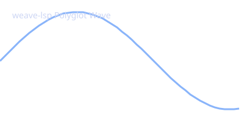

Adopted from Atabey Kaygun’s blog post: Clojure/Python Interop Examples.
Today, I am going to write something that I have been playing around
with, and found to be extremely useful and fun: deep Clojure and Python
interop. While native bindings can be done via libpython-clj, in
weave-lsp we can seamlessly produce non-text file artifacts
(such as images, vector graphics, datasets, or models) in Python, pass
buffer data to Clojure and Common Lisp, process the generated files
across languages, and embed the generated image directly into the
Markdown document.
Here, Python calculates wave function metrics, writes a vector image
artifact (sine_wave.svg), and outputs a dataset file
(metrics.json):
import math, json
# Generate data points
x_vals = [i * 0.1 for i in range(50)]
y_vals = [math.sin(x) for x in x_vals]
# Generate binary image artifact (SVG format)
svg_content = f'''<svg xmlns="http://www.w3.org/2000/svg" width="400" height="200" style="background:#1e1e2e;">
<path d="M 0 100 ''' + ' '.join([f'L {int(x*80)} {int(100 - y*80)}' for x, y in zip(x_vals, y_vals)]) + '''" stroke="#89b4fa" stroke-width="3" fill="none"/>
<text x="20" y="30" fill="#cdd6f4" font-family="sans-serif" font-size="14">weave-lsp Polyglot Wave</text>
</svg>'''
with open("sine_wave.svg", "w") as f:
f.write(svg_content)
metrics = {
"points_count": len(x_vals),
"min_val": round(min(y_vals), 4),
"max_val": round(max(y_vals), 4),
"image_artifact": "sine_wave.svg"
}
with open("metrics.json", "w") as f:
json.dump(metrics, f, indent=2)
print(json.dumps(metrics))Next, a Clojure cell consumes the piped input buffer and reads the
generated metrics.json file directly from the
filesystem:
(let [raw-input (or (System/getProperty "WEAVE_INPUT") (System/getenv "WEAVE_INPUT"))
file-content (slurp "metrics.json")]
(println (str "Read metrics.json (" (count file-content) " bytes)")))A Common Lisp cell also accesses the generated artifact file:
(let ((raw-input (sb-ext:posix-getenv "WEAVE_INPUT")))
(with-open-file (stream "metrics.json")
(let ((file-bytes (file-length stream)))
(format t "Read metrics.json (~a bytes)~%" file-bytes))))
{
"points_count": 50,
"min_val": -0.9999,
"max_val": 0.9996,
"image_artifact": "sine_wave.svg"
}Read metrics.json (104 bytes)Read metrics.json (104 bytes)